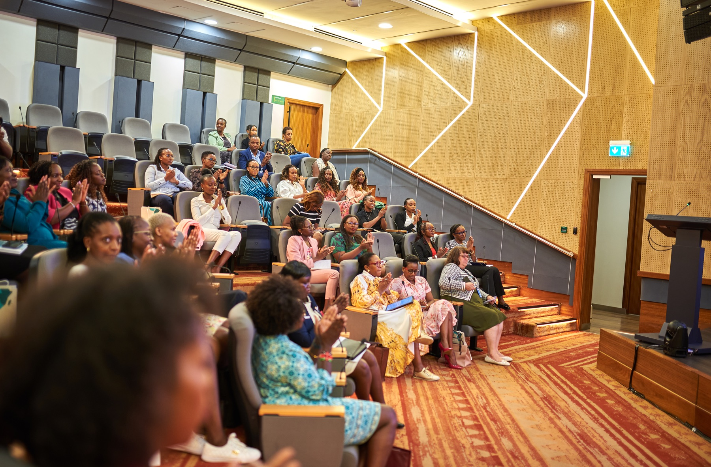
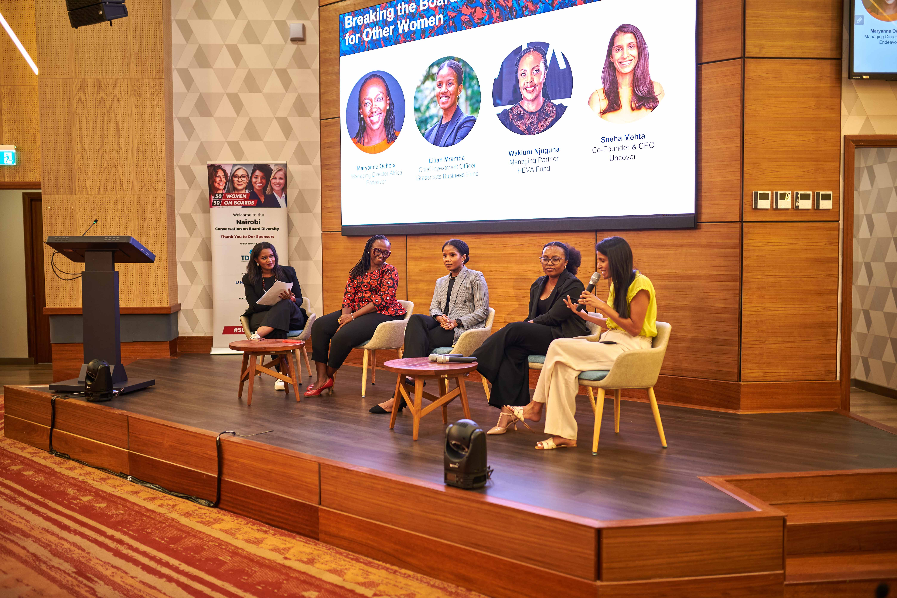
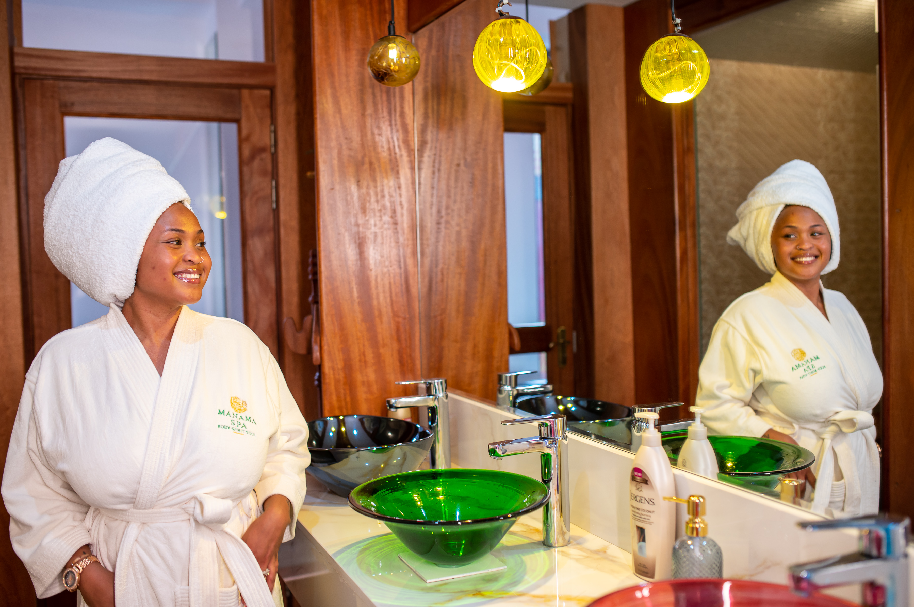

Clients
Trusted to capture the moment.
Production partners
Built through collaboration.
What clients say
From the people in the work.
“Mic-Jasiri delivered outstanding work for us. Their professionalism, creativity and attention to detail exceeded our expectations at every stage of the production.”
“Working with Ali and the Mic-Jasiri team was a remarkable experience. They captured our story with authenticity and delivered a production we are truly proud of.”
“The quality and professionalism Mic-Jasiri brought to our production was exceptional. A team that truly understands how to bring a vision to life on screen.”

50 Women on Board
